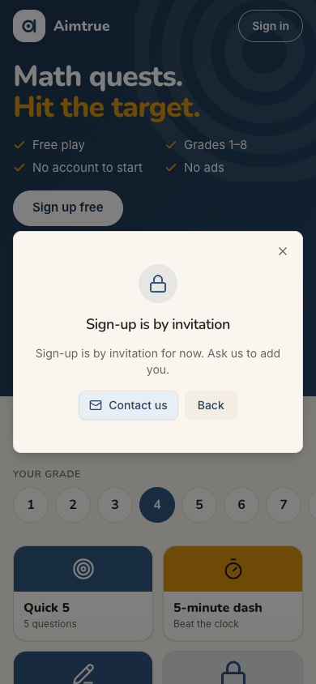
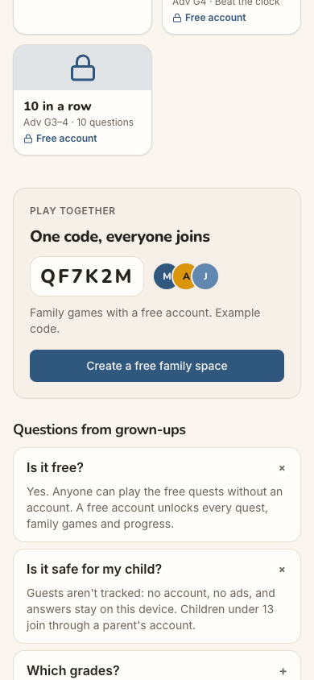
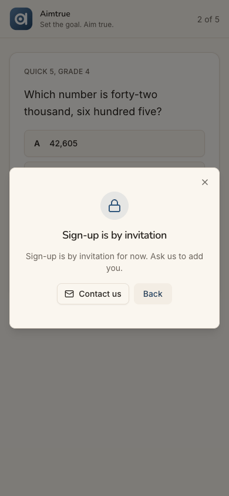
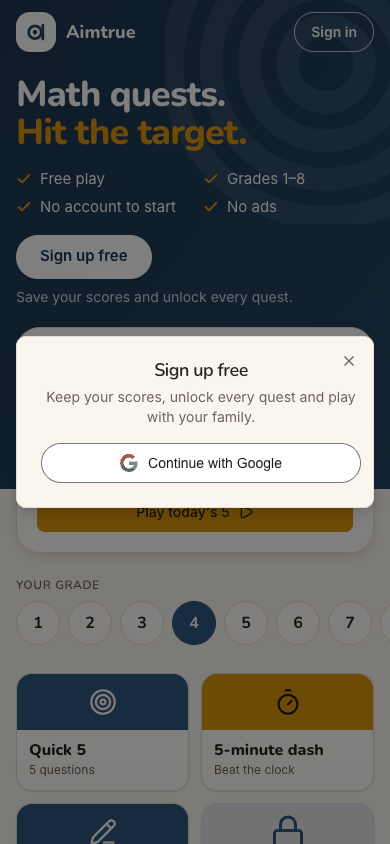
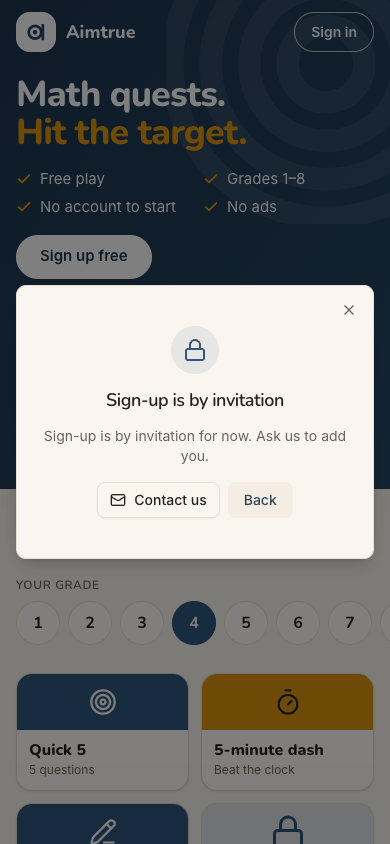
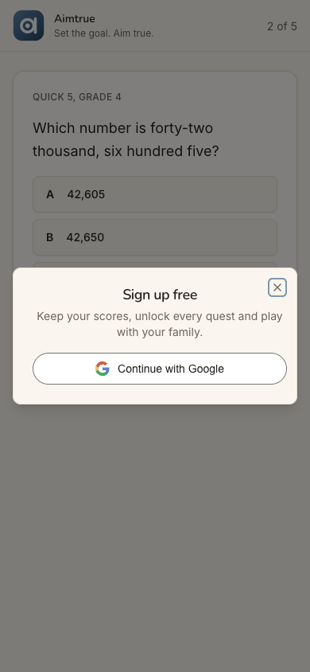
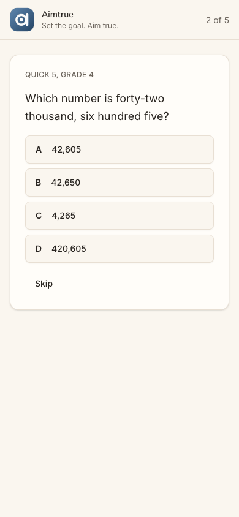

Who: Ben Carter, 39 (born September 1987), a parent who heard about Aimtrue by word of mouth. He arrives signed out on the guest page as cohort C6, the Quest player ("Let me play.") in docs/member-home-plan.md. Once inside, as a parent he would be C4, the practice parent. He wants what the page promises: a free account so his family's scores are kept and they can play together. The platform is in Pre-approved mode, and ben.carter@example.com is not on the list. He does not know there is a list.
Outcome: 1/1 journeys passed, 0 skipped, 20 of 20 steps verified. The refusal works as this journey expects, and it comes early. Right after Continue with Google (step 3), before any birth-date form ("Almost there" never appears), Ben reads "Sign-up is by invitation … Ask us to add you." The server refused four times, each a 403 from POST /api/auth/google (steps 3, 6, 15 and 19). The page showed the same refusal four more times from memory, without asking the server (steps 9, 10, 17 and 20). Two things are left to him:
Contact us: a bare mailto: to a personal Gmail mailbox, with no subject and no body. In this browser it did
nothing visible (step 4).
Guest play: it works. Quick 5 opens (step 12), and it resumes at question 2 after he goes home and back
(step 19).
The end state was checked again after a reload (step 17): signed out (401), no cookie, and only the guest keys in the tab's storage.
Conversion figures (counted from the entry point):
Conversion: none, and the product leaves Ben no real way to convert by himself. Under Pre-approved, his one way to an account is to write an email from scratch to an address the page never shows.
Stickiness: Today's 5 and the free tiles give him a reason to come back as a guest. Nothing tells him whether or when he will be let in. He has no account and gave no address, so the product cannot tell him either. He would have to remember to try again.
The 3 screens Ben would notice most:
Step 3, the refusal. It comes fast and costs him nothing: no birthday asked, nothing typed. But it repeats its
title, does not say which Google account it checked, does not say he can keep playing, and "Ask us to add you" leaves "us" and "add" unexplained. A parent who was just told "Sign up free" reads it as a closed door with no sign. step 3
Step 4, Contact us. This is the only way forward, and clicking it here changed nothing on screen. With no mail
app set up, as on many computers used with webmail, no draft opens and the address is never shown. On a phone it would open an empty draft to a personal Gmail address. That looks unofficial to a parent judging whether to trust a children's product.

step 4
Step 9, "Create a free family space". This is the button written for him, a parent, under "Play together". It
answers at once with the same "Sign-up is by invitation". The FAQ just above (step 8) had told him "A free account unlocks every quest, family games and progress." The page's promise and its answer disagree twice in a row.
Contact us is the only way forward, and it is a blank email to a personal Gmail address
Issue
The refusal has one forward action, "Contact us". It is a mailto: link to a personal @gmail.com mailbox, the same one as the footer's Contact us. It has no subject and no body. Nothing in it says who Ben is, which address should be added, or what he is asking for. In this run's browser, which has no mail app, clicking it changed nothing: no window, no message, no address shown, and the dialog stayed as it was (step 4). The same happens on any computer without a mail app set up, which is common for people who use webmail. On a phone with a mail app it would open an empty draft. The address itself appears nowhere on the page as text. Whatever Ben writes arrives as an email that someone has to turn into a list entry by hand. As far as the screen shows, nothing reaches the console's list.
Violation
cuj-contract, step 4 (expected: a way to ask to be added; observed: a bare mailto: that gave no visible result); Nielsen #1 Visibility of system status (no feedback after the click); Nielsen #9 Help users recognize, diagnose, and recover from errors (the way out is left for Ben to work out).
Severity
Classify: a workaround is needed. Ben must find the address (by hovering or long-pressing), open
his own mail and decide what to write. For this cohort it is the only route to an account under Pre-approved, so this is where the conversion is lost. A personal Gmail address as the platform's contact also weakens trust for a parent about to hand over a child's practice data. It is not a 4: the journey expects a refusal, and guest play still works.
Evidence
step 3step 4 Repro: on a Pre-approved platform, signed out at /, tap Sign up free, then Continue with Google as an account that is not on the list. The dialog's accessibility tree shows link "Contact us": /url: mailto:<personal gmail>, with no subject= and no body=. Clicking it in headless Chrome changes nothing on screen.
Fix
Give the refusal an Ask for an invitation button that sends a request into the console's Sign-up access page, beside access_list, with the verified email it already holds and an optional one-line note. It should confirm on screen: "Asked. We'll email ben.carter@example.com when you're added." That stores an email for someone who was refused, so it is the owner's call against the privacy notice. Until then, the minimum fix:
a role address on the platform's own domain instead of a personal mailbox;
subject=Aimtrue: please add me and a body with the refused email;
the address shown as text with a Copy button;
after the click, the line "Your mail app should open. If it doesn't, write to <address>."
sev2
Every door still says free and leads back to the same refusal: four dead ends
Issue
Under Pre-approved, nothing before Google says sign-up is by invitation:
the hero: "Sign up free / Save your scores and unlock every quest" (step 1);
the sheet: "Sign up free" (step 2);
the grown-ups' FAQ: "A free account unlocks every quest, family games and progress" (step 8);
"Create a free family space" and "Family games with a free account" (step 9);
every padlocked tile: "Free account".
Ben gives the page his Google identity before he learns he cannot sign up. After the refusal, none of these changes. He met the same refusal from four doors (steps 6, 9, 10 and 15), and each time it led nowhere new. Inside the guest quest, the offer after question 1 still makes Sign up free the main button, with "Keep playing" second (step 13). That button took him straight to a fourth refusal (steps 14-15).
Violation
cuj-contract, steps 1, 2, 8, 9 and 13 (expected under Pre-approved: the offer says "invitation only", or stops once this tab was refused; observed: "free" everywhere); Nielsen #5 Error prevention (the refusal could be foreseen before Google); Nielsen #4 Consistency and standards (the page's promise and the server's answer disagree).
Severity
Classify: an observable mismatch and real friction. That is four dead ends and about ten wasted
taps, and the "free" promise breaks three seconds after Google. For a parent deciding whether to trust the product, that costs credibility. It is not a 3: closing the dialog and playing as a guest works.
Evidence

step 8step 9step 13

step 15 Repro: as above, up to the first refusal. Close it, then tap "Create a free family space", the header's Sign in, or a quest's after-question-1 offer, then Sign up free and Continue with Google. Each one ends at "Sign-up is by invitation".
Fix
Tell the signed-out page that sign-up is Pre-approved. /api/auth/config already tells it whether sign-up is open, so this can be one more field. Then, under Pre-approved:
the hero's button reads "Sign up (by invitation)" or "Have an invitation? Sign in";
the sheet's subtitle says "Sign-up is by invitation for now. If your email is on the list, you'll go straight
in.";
the FAQ gets "How do I get an account?";
padlocks say "With an account" instead of "Free account".
After a refusal in this tab, keep a tab flag. The after-question-1 offer then leads with Keep playing only, and the "Sign up free" buttons open the refusal's explanation, with Ask for an invitation, instead of Google.
sev2
The refusal does not say which account was checked or what is still open to him
Issue
The dialog reads "Sign-up is by invitation" and then "Sign-up is by invitation for now. Ask us to add you." The body repeats the title and adds four words. Several things are missing:
Which account it checked. It does not name ben.carter@example.com, so a parent with both a work and a
personal Google account cannot tell whether the other might be on the list. There is no "Use another Google account".
That he can keep playing. Guest play is the one thing open to him, and it works (steps 12 and 19).
What "add you" means: to what, who decides, and how long it takes.
Its Back button does not go back to the page. It reopens the "Sign up free" sheet (steps 5 and 11), the door that was just refused. The dialog also has no accessible name: the accessibility tree shows an unnamed dialog wrapping an alert.
Violation
cuj-contract, steps 3 and 5 (expected: a refusal that says what happened and what he can do now; observed: a repeated title, and Back to the refused door); Nielsen #9 Help users recognize, diagnose, and recover from errors; Nielsen #3 User control and freedom (Back does not mean back).
Severity
Classify: real friction. He has to work out alone that he can still play, and he cannot tell
whether another account would get in. It is not a 3: the X closes the dialog and the page still works.
Evidence
step 3

step 5 Repro: as above, up to the refusal, then tap Back. The "Sign up free" sheet with Continue with Google comes back.
Fix
Title: "Aimtrue is invite-only for now".
Body: "ben.carter@example.com isn't on the invitation list yet. You can keep playing as a guest. Nothing is
saved until you have an account."
Buttons: a primary Keep playing (it closes the dialog and scrolls to the tiles), **Ask for an
invitation (see the sev3 finding), and a small link Use another Google account**, which starts Google's account chooser.
Back: drop it or make it close the dialog.
Accessibility: point the dialog's aria-labelledby at its heading.
sev2
The refusal sticks to the page: it reopens unasked and answers Sign in from memory
Issue
After the first refusal, the page holds it until a reload. "Create a free family space" (step 9) and the header's Sign in (step 10) showed the refusal at once, without contacting Google (no new request). So Sign in cannot be used to try a different Google account; only Back, then Continue with Google, can. Worse, going home from a guest quest with the Aimtrue logo opened the refusal by itself, on the guest page, without any tap on a sign-up control. This was seen at step 17. It was reproduced at step 20 after a fresh refusal, again with no new request. Each time it went away only when he closed it or the page was reloaded. After the reload the page was clean: signed out, with only the guest keys kept (step 17). This is the same class of problem as J05's "sign-up form reopens by itself".
Violation
cuj-contract, steps 10, 17 and 20 (expected: the sign-in sheet, and the plain guest page; observed: the refusal); Nielsen #3 User control and freedom (a dialog he closed comes back); Nielsen #1 Visibility of system status (it looks like a new refusal for something he did not do).
Severity
Classify: friction. He must close it each time. To a parent it reads as being refused again for
nothing, and the stale answer blocks trying another account through Sign in. It is not a 3: after a reload the end state is right, and nothing about him is shown.
Evidence
step 10step 20 Repro: refuse a Pre-approved sign-up and close the dialog. Tap the Quick 5 tile, then the Aimtrue logo in the quest's header. / opens with "Sign-up is by invitation" already showing. The network log shows no new POST /api/auth/google.
Fix
Clear the held sign-in result when the refusal is closed (X or Back) and on every route change.
Have Sign in always start the provider's flow.
Add a web e2e check: refuse a Pre-approved sign-up, close the dialog, open a tile, tap the logo, and assert that
no dialog is open.
Fix it together with J05's reopening sign-up form, which likely shares the same pending state.
Walkthrough
Step 1 — Open http://localhost:8797/ signed out (landing) Expected: the guest page, with a way to sign up. Observed: match. The page reads "Math quests. Hit the target.", with ticks for Free play, Grades 1–8, No account to start and No ads. A white Sign up free sits over "Save your scores and unlock every quest." Below are Today's 5 (Grade 4), the grade row and tiles, three of them locked with "Free account". It is the same page as under Post-approved: nothing hints that sign-up is by invitation. Desktop and dark render cleanly.Step 2 — Tap "Sign up free" Expected: the sign-up sheet. Observed: match. "Sign up free / Keep your scores, unlock every quest and play with your family.", one Continue with Google button and an X. Nothing mentions an invitation or a list.Step 3 — Tap "Continue with Google": the refusal (landing) Expected: "Sign-up is by invitation". Observed: match, and early. He is refused straight after Google, before the birth-date form: "Almost there" never appears, and the network log shows 403 POST /api/auth/google. A padlock sits over "Sign-up is by invitation", then "Sign-up is by invitation for now. Ask us to add you." The buttons are Contact us (outlined, with a mail icon), Back and an X. His email is not shown, and nothing mentions guest play. The page behind still says "Sign up free".Step 4 — Tap "Contact us" Expected: a way to ask to be added. Observed: the link is mailto: a personal @gmail.com address, with no subject and no body (read from the page; nothing was sent). In this headless browser there is no mail app, so the click changed nothing: the dialog stays, with Contact us highlighted. The mail app's draft could not be observed.Step 5 — Tap "Back" Expected: back to the guest page. Observed: the "Sign up free" sheet comes back, with Continue with Google: the door that just refused him.

Step 6 — Tap "Continue with Google" again Expected: the same refusal, since nothing has changed. Observed: match. The same dialog, word for word, and a second 403. Dead end 1.Step 7 — Close the refusal with the X Expected: the guest page, ideally saying that sign-up is by invitation. Observed: the guest page, unchanged: Sign up free is still the main button, and nothing remembers the refusal.Step 8 — Scroll to "Questions from grown-ups", open "Is it free?" and "Is it safe for my child?" Expected: something on how to get an account. Observed: "Yes. Anyone can play the free quests without an account. A free account unlocks every quest, family games and progress." and "Guests aren't tracked: … Children under 13 join through a parent's account." There is no word of invitation. Above them, under "Play together / One code, everyone joins", is "Family games with a free account. Example code." and a dark Create a free family space. The footer has Privacy, Terms and Contact us (the same mailto:).Step 9 — Tap "Create a free family space" Expected: the parent's way in (the sheet, or wording for families). Observed: the same "Sign-up is by invitation" at once, with no sheet and no new request. The page reused the refusal it holds. Dead end 2.Step 10 — Close it, scroll up, tap the header's "Sign in" Expected: a sign-in sheet, where he could try his other Google account. Observed: the refusal again, at once, with no request. After one refusal, every door opens the same dialog from memory. Dead end 3.Step 11 — Tap "Back" (from the Sign-in refusal) Expected: the guest page, or a sign-in sheet. Observed: a sheet titled Sign up free, though he came from Sign in (J05 found the same title on Sign in). This is the only path left to try a different Google account.Step 12 — Close the sheet and tap the "Quick 5" tile, Grade 4 (landing: what is left) Expected: a guest quest. Observed: match. /play/G4Q5, "QUICK 5, GRADE 4", "What is the value of the digit 7 in 47,215?", an answer box, Answer, Skip, "1 of 5". Clean on desktop and in dark mode.Step 13 — Type 7000 and tap "Answer" Expected: the next question (the run's settings show a sign-up offer after question 1). Observed: "Nice! That one is right. With a free account:", with four ticks (90+ more Grade 4 questions, every quest unlocked, family games, scores saved). Below are Keep playing (secondary), Sign up free (primary) and "Under 13? Ask a grown-up". Question 2 of 5 waits behind it.

Step 14 — Tap "Sign up free" on the offer Expected: after earlier refusals, something saying sign-up is by invitation. Observed: the full "Sign up free" sheet with Continue with Google, over question 2 (now multiple choice).Step 15 — Tap "Continue with Google" Expected: the same refusal. Observed: match. "Sign-up is by invitation" over the quest, from a real request (the third 403). Dead end 4.

Step 16 — Close the refusal Expected: back in the quest where he was. Observed: match. "2 of 5", "Which number is forty-two thousand, six hundred five?", choices A-D and Skip. Nothing was lost.Step 17 — Tap the Aimtrue logo to go home, then reload Expected: the guest page. Observed: the logo tap opened / with "Sign-up is by invitation" already showing, although he had tapped nothing sign-up related (this moment was not screenshotted; it was reproduced at step 20). The screenshot is after a reload, the end-state check: a clean guest page, signed out (401 on /api/auth/session), no cookies, and only aimtrue.guest (localStorage) and aimtrue.guest-quest (sessionStorage) kept. The page shows no Continue for his unfinished guest quest.Step 18 — Tap the header's "Sign in" (after the reload) Expected: a sign-in sheet. Observed: the sheet titled Sign up free with Continue with Google. The reload cleared the held refusal, so the normal sheet is back (and with it the chance to choose another account).Step 19 — Continue with Google (refused again), close, tap "Quick 5" Expected: a refusal, then the guest quest. Observed: match. The fourth 403 and the same dialog. Closed, the tile opens /play/G4Q5 cleanly and resumes at 2 of 5: the guest quest was kept for the tab.Step 20 — Tap the Aimtrue logo (from the quest to home) Expected: the guest page. Observed: the guest page with "Sign-up is by invitation" open by itself, with no new request. This reproduces step 17's observation. The journey ends here: the refusal, Contact us and guest play are recorded.
1 / 20
Appendix
Mode: live. The web app at http://localhost:8797 is a frozen copy of commit 2d6e7d3 with sign-in on,
driven in headless Chrome at 390×844 (phone), plus 1280×800 and dark mode at the landing steps (1, 3 and 12).
Frameworks applied:
cuj-contract: every step against its expected result.
task-completion: the journey ran to its defined end, the refusal and what is left to Ben.
success-criteria: the end state was checked again after a reload at step 17: signed out (401), no cookie, only
the guest keys kept, and no refusal remembered (step 18 shows the normal sheet).
CUJ manifest: J13, 20 steps, all verified. Step 4's destination was read from the link, and its click observed.
The mail app it would open cannot exist in headless Chrome. Steps 5, 9, 10, 13, 17 and 20 were observed and did not match the expectations above (findings).
Coverage / not inspected:
The mail app's draft behind Contact us (headless Chrome has none). Whether a phone or desktop mail app
would fill anything in was not seen; the link carries no subject or body.
The server's side. By the audit's rules there were no database or API reads. Whether the refused email is
logged or stored anywhere, and whether the console shows anything for Ben, was not checked. The run's admin agent is not part of this journey.
The Terms and Privacy pages, and the FAQ's "Which grades?" (not opened).
Back on the family-space refusal (step 9). Back was tried only from the first refusal (step 5) and from the
Sign-in refusal (step 11).
Guest play beyond question 1 (out of scope), Show your work, the Daily and family game codes.
Keyboard-only and screen-reader use. The accessibility tree was read only to find controls; it showed the
refusal dialog without an accessible name.
Other sign-in providers (not offered on the production web).
The iOS app. It is covered by separate journeys; J13 has no app replay.
Access: through the app's real sign-in and sign-up screens; the Google provider step is simulated (a stand-in for Google's button hands the app a local test token for the persona).
Preconditions made outside the UI: none by J13 itself. The run's platform-admin agent switched sign-up access to
Pre-approved and put J12's email on the list before this journey (status log, 18:11 UTC). Ben's email was not added. The other platform settings are as docs/userjourney/README.md "The run" records: web sign-in Google only with sign-up open, and guest play, the guest assessment's offer after question 1, and the Daily on.